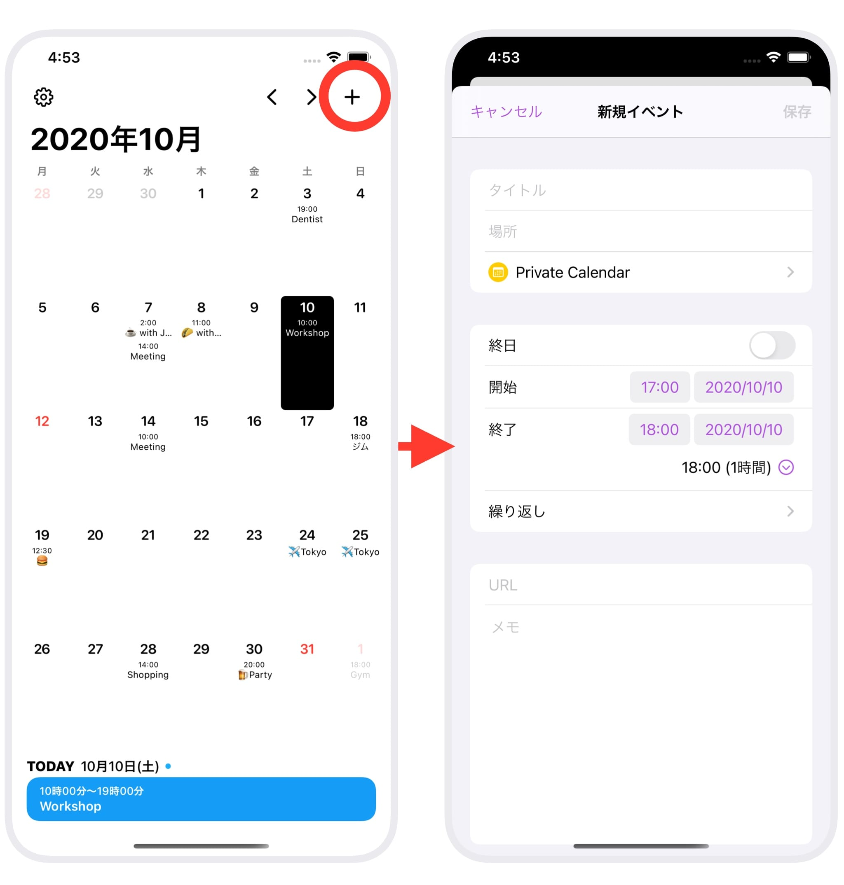
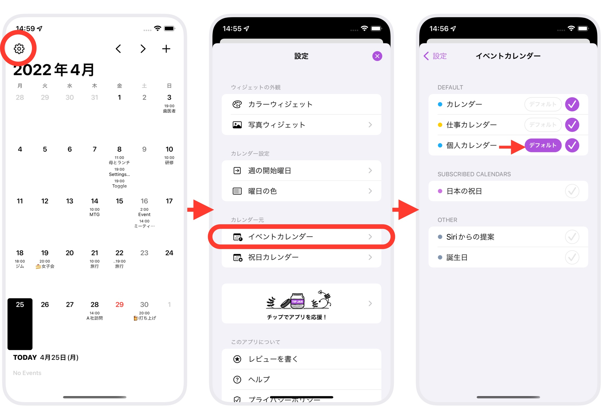

予定を追加するには、カレンダー右上の「+」ボタンをタップします。

「+」ボタンがグレーになってタップできない場合は、イベントカレンダーが設定されていない状態なので、まずはイベントカレンダーの設定を行なってください。
・イベントカレンダーの設定方法
どのカレンダーに予定を追加するかは、予定の追加時にいつでも変更できます。
はじめに選択されているカレンダーは、イベントカレンダーの設定で、「Default」として設定されているカレンダーです。

Help目次へ戻る